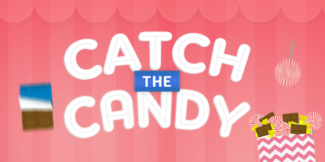
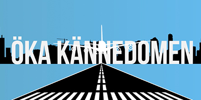

Projects
Web
Close
Catch the Candy
Tools used: HTML5, CSS3, JavaScript & GreensockJS
Made as a test demonstrate the collision abilities of Draggable in GreensockJS, this game got It's inspiration from an ad I saw a couple of years ago. I thought it was a fun project to also test my animation skills and was a lot of fun to make! The game was entirely written in Javascript with animations from GSAPs awesome platform. Catch the candies before they goes out of screen. Are you up for the challenge? Or are just a boring peace of broccoli?
Close
Simon Says...
Tools used: HTML5, CSS3, JavaScript & GreensockJS
Another interesting project that was intended as a mockup for an actual mobile ad. The inspiration came from one of Google's Doodles where you were suppose to draw different shapes to accomplish certain tasks. I found this really cool external JS library that was called dollar.js, in which did exactly what I was looking for. My former boss was given as the title character just because of his name and the premise.
Close
Swipe the Money
Tools used: HTML5, CSS3, JavaScript & GreensockJS
Used as an actual live mobile ad campaign I did for a finish lottery company. The idea initially was to swipe as much money you can in as short time as possible but this was changed upon request of the client. Once again, Draggable in combination with some JS-tricks and clever Greensock-animation helped me achieve what I wanted.
Motion Graphics
Close
Arlanda Event Informercial
Tools used: Adobe Illustrator, Adobe After Effects, Final Cut Pro
A demonstration movie for an Event held at Arlanda Airport in 2014, I though it would be a fun way to display my Motion Graphics-skills outside the web environment. The inspiration for the theme of the movie comes from the Saul Bass inspired intro to the Spielberg film "Catch Me if You Can", which is love. It took me about four weeks to illustrate all the scenes and animate them in After Effects.